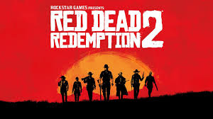

Title :
Outlaw From The West
INFO :
Outlaw from the west는 레드데드리뎀션2의 주요 테마곡으로 서부의 악당느낌을 잘살려주며 초반부 게임진행의 몰입을 돕는다. 입체적인 캐릭터인 아서는 여전히 악당성을 가졌음을 플레이어에게 상기시키지만 이는 다시 아서의 선행들을 부각시켜 후반부에 울려퍼질때의 몰입감은 이루말할 수가 없다.
-제작자-